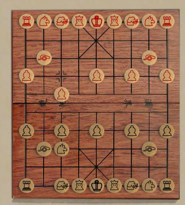

Сянци
Xiangqi is the member of the Chess family
which
is
most
widely
played in China. If you look past the
surface details, the overall board plan and movement style
is similar
to chess; but there are a lot of interesting details.
The board is 10x9,
and pieces
are placed on the intersections rather than in the
squares. The
center of the board is called the river,
which elephant pieces
cannot
cross, and soldier
pieces
become more powerful after crossing the river. A 3x3
square on
the
edge of the board is called the palace. The opposing generals and
their guards are confined to
their respective palaces.
The pieces, which
are red and
black, are tradionally just discs wiht chinese characters
naming them.
Boardspace defaults to westernized icons, but the
traditional
characters are one-click available..
Some
of
the
movements
are identical or very similar to Chess, but
others are unique, especially the cannon.
Checkmate is
similar to
Chess, but perpetual check is forbidden, and stalemate is a
win for the
stalemating player.
Complete rules can be found here.
Robots:
Adequate.
|

|